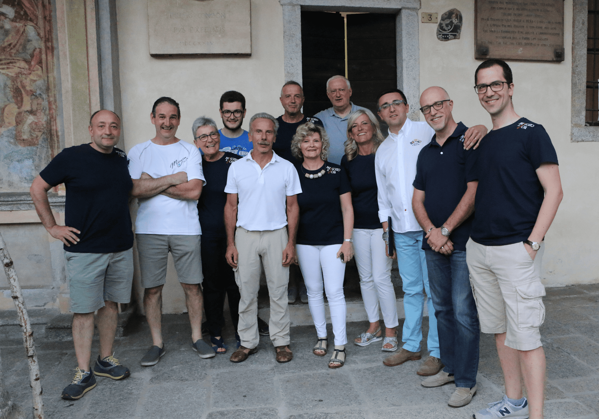

Gianluca Ciani
Presidente

Mergozzo Si Nota nasce nel 2016 da un gruppo di amici, quasi per gioco e con l'obiettivo di valorizzare il territorio, le risorse artistiche e culturali di Mergozzo. Anno dopo anno la stagione estiva di Mergozzo si nota diventa un appuntamento fisso, incentrato principalmente sulla musica ma capace di rinnovarsi e ampliarsi anche verso mondi affini come quello del teatro e della letteratura. Sotto il Porticato delle Cappelle, sede storica del festival, negli anni si alternano grandi nomi della musica classica e del jazz, della letteratura e del cinema, ottenendo sempre un notevole riscontro di pubblico.
Con l'ingresso nell'associazione di giovani leve nell'autunno 2022, alla stagione estiva di Mergozzo di nota si affianca Off Season, un festival di stampo prettamente jazzistico nato per valorizzare nuovi spazi di Mergozzo restituiti alla collettività (l'Antica Latteria di Mergozzo) e soprattutto per arricchire Mergozzo e la provincia di una proposta artistica anche nei mesi "off", quelli autunnali e invernali. Off Season ha già ospitato nomi di chiarissima fama nazionale e internazionale, tra i quali citiamo Dado Moroni, Andrea Dulbecco, Daniele di Bonaventura, Chris Collins, Rale Micic, Yuri Goloubev, Mauro Ermanno Giovanardi, Asaf Sirkis e Claudio Fasoli.
Nel 2026 ricorre dunque il decennale dell'associazione, evento che abbiamo voluto festeggiare con una mostra fotografica sotto il Porticato delle Cappelle ritraente gli eventi principali di questi dieci anni di musica, a cura dei tanti fotografi che abbiamo avuto piacere di ospitare nel nostro festival. La mostra rimane accessibile al pubblico da giugno fino alla fine dell'anno.
Le persone che contribuiscono alla visione e alla realizzazione di Mergozzo Si Nota.
Presidente
Vicepresidente e direttore artistico di Off Season
Direttore artistico di Mergozzo Si Nota Estate
Segretaria e tesoriera
I soci